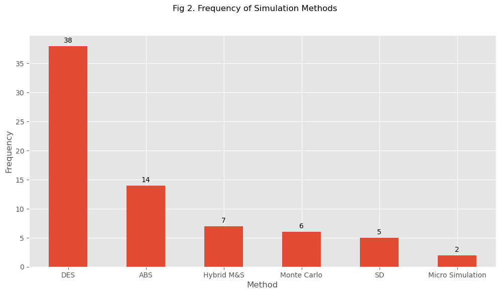
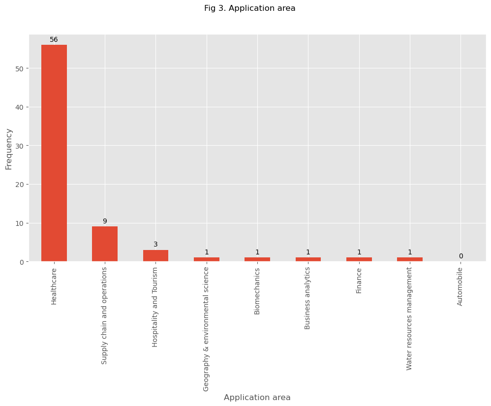
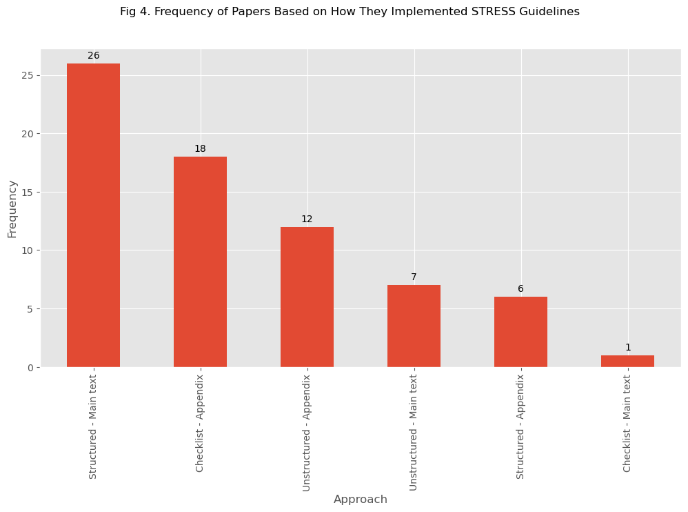
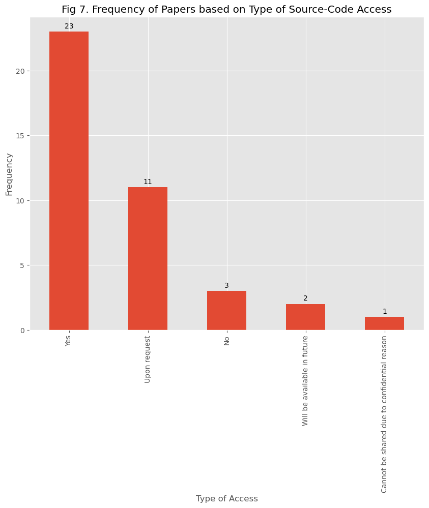

Code
import pandas as pd
import numpy as np
import matplotlib.pyplot as plt
from typing import Optional
# use gglot style for all matplotlib
plt.style.use("ggplot")This notebook contains the Python script that analyses the data extracted from the STRESS review.
import pandas as pd
import numpy as np
import matplotlib.pyplot as plt
from typing import Optional
# use gglot style for all matplotlib
plt.style.use("ggplot")REVIEW_CSV_FILE_PATH = "PY_STRESS.csv"Some simple functions repeatedly used for plotting or analysing datasets.
def frequency_bar_chart(
data: pd.DataFrame,
x_label: str,
y_label: Optional[str] = "Frequency",
rotate_x_ticks: Optional[int] = 0,
figsize: Optional[int|int] = (12,6)
):
'''
Create bar chart of the selected categorical variable.
Returns matplotlib figure and axis.
Parameters:
---------
data: pd.DataFrame
Frequency dataset for bar chart
x_label: str
Label to display on x-axis
y_label: str, optional (default = "Frequency")
Label to display on y-axis
rotate_x_ticks: int, optional (default = 0)
Degress to rotate the x axis text (0 for no rotation)
figsize: Tuple(int, int), optional (default=(12,6)
The size of the matplotlib picture.
Returns:
-------
out: fig and axis of plot
'''
fig = plt.figure(figsize=figsize)
ax = fig.add_subplot()
ax = data.plot(kind="bar", ax=ax)
_ = ax.set_xlabel(x_label)
_ = ax.set_ylabel(y_label)
# Add data labels on the bars
_ = ax.bar_label(ax.containers[0], label_type="edge", padding=3)
# rotate x axis text
_ = plt.xticks(rotation=rotate_x_ticks)
return fig, axNote this data collected in Excel.
TM query (1): can we drop column index 27? This is labelled 27 and is all values are null. I’ve removed it in the code below…
TM query (2): there were three blank lines at the end of the CSV. I’ve removed this in the updated load routine.
TM query (3): what does DP mean in “used?”
TM query (4): target authors: is this a manual field you have included? or did you have a formula in Excel? It appears to be different from your calculation at the end?
TM query (5): To discuss with others -> I think we should just exclude all studies not in English.
Smaller function used by the main pipeline to load the dataset.
def recode_whitespace(df: pd.DataFrame) -> pd.DataFrame:
'''
recode whitespace as "_" and strip head/tail whitespace just in case
'''
# strip leading and lagging white space
df.columns = df.columns.str.strip()
# replace remaining whitespace with "_"
df.columns = df.columns.str.replace(" ", "_")
return df
def strip_punctuation(df: pd.DataFrame) -> pd.DataFrame:
'''
strip select punction from column headers
'''
df.columns = df.columns.str.replace("?", "")
df.columns = df.columns.str.replace("'", "")
df.columns = df.columns.str.replace("-", "_")
df.columns = df.columns.str.replace("/", "")
return df
def cols_to_lower(df: pd.DataFrame) -> pd.DataFrame:
"""
Convert all column names in a dataframe to lower case
Params:
------
df - pandas.DataFrame
Returns:
-------
out: pandas.DataFrame
"""
new_cols = [c.lower() for c in df.columns]
df.columns = new_cols
return df
def drop_non_english_language(df: pd.DataFrame) -> pd.DataFrame:
'''
Check for "Not in English" recorded in any column
Return all other rows.
'''
return df[~df.isin(['Not in English']).any(axis=1)]def load_review_dataset(
path: Optional[str] = REVIEW_CSV_FILE_PATH,
) -> pd.DataFrame:
"""Read full data extraction data set for the review from a CSV file.
Returns cleaned dataset.
Assumes data is stored in .csv
Cleaning pipeline for dataset:
1. drop redunance columns
2. drop rows that contain all NAs
3. drop rows that are no in English
3. rename columns with complex strings
4. strip all punctuation from column headers
5. column headers to lower case
6. replace all whitespace in headers with "_"
7. convert all blank strings in cells to NaN
8. recode variables to be internally consistent in naming
9. perform type conversion for integer fields
10. type conversion for categorical fields
Parameters:
----------
path: str, optional (default=REVIEW_CSV_FILE_PATH)
path or URL for review dataset.
Returns:
--------
out: pd.DataFrame
"""
# SETUP FOR DATASET CLEAN
# cols to drop from data read in
cols_to_remove = [
"Unnamed: 0",
"...27",
"Questions to be asked from authors / experts",
"Fatemeh's Note",
"Note",
]
# simple type conversions
type_conversions = {"year": "UInt16"}
# renaming of columns to names suitable for analysis
new_labels = {
"1. Objectives (purpose, model outputs, aims of experimentation)": "stress_objectives",
"2. Logic (base model overview diagram, base model logic, scenario logic, algorithms, components)": "stress_logic",
"3. Data (data sources, input parameters, preprocessing, assumptions": "stress_logic",
"4. Experimentation (initialisation, run length, estimation approach)": "stress_exp",
"5. Implementation (software and programming language, random sampling, model execution, system specification)": "stress_imp",
"6. Code access (computer model sharing statement)": "stress_code",
}
# used to recode variables so they are consistent.
recoded_variables = {"used": {"NO": "No"}}
# DATA CLEANING PIPELINE
df = (
pd.read_csv(path, index_col="No")
# drop redundant index column
.drop(labels=cols_to_remove, axis=1)
# drop all blank rows (this will remove the blank 3 rows at end of CSV)
.dropna(how="all")
# drop all studies that do not use an English language
.pipe(drop_non_english_language)
# rename verbose column headers
.rename(columns=new_labels)
# remove any punctutation i.e. "?" and "-"
.pipe(strip_punctuation)
# all columns headers to lower case
.pipe(cols_to_lower)
# replace all whitespace with "_" in col headers
.pipe(recode_whitespace)
# replace all whitespace and blank strings in fields with NaN
.replace(r"^\s*$", np.nan, regex=True)
# recoded variables e.g. used "NO" becomes "No"
.replace(recoded_variables)
# update the type of columns to int where needed
.astype(type_conversions)
# categorical variables
.assign(
used=lambda x: pd.Categorical(x["used"]),
type_of_paper=lambda x: pd.Categorical(x["type_of_paper"]),
partially=lambda x: pd.Categorical(x["partially"]),
method=lambda x: pd.Categorical(x["method"]),
software=lambda x: pd.Categorical(x["software"]),
source_code_access=lambda x: pd.Categorical(
x["source_code_access"]
),
application_area=lambda x: pd.Categorical(x["application_area"]),
target_authors=lambda x: pd.Categorical(x["target_authors"]),
stress_implementation=lambda x: pd.Categorical(
x["stress_implementation"]
),
hybridisation=lambda x: pd.Categorical(x["hybridisation"])
)
)
return df# read in data.
clean_review_df = load_review_dataset()
# quick summary of columns
clean_review_df.info(memory_usage=False)<class 'pandas.core.frame.DataFrame'>
Index: 165 entries, 1 to 171
Data columns (total 25 columns):
# Column Non-Null Count Dtype
--- ------ -------------- -----
0 publication 165 non-null object
1 authors 165 non-null object
2 year 163 non-null UInt16
3 type_of_paper 163 non-null category
4 journal 161 non-null object
5 name_of_univerity 73 non-null object
6 type_of_study 164 non-null object
7 pre_prints 165 non-null object
8 doi 159 non-null object
9 used 161 non-null category
10 partially 71 non-null category
11 target_authors 73 non-null category
12 method 73 non-null category
13 hybridisation 7 non-null category
14 stress_objectives 70 non-null object
15 stress_logic 70 non-null object
16 stress_logic 70 non-null object
17 stress_exp 70 non-null object
18 stress_imp 70 non-null object
19 stress_code 70 non-null object
20 source_code_access 40 non-null category
21 software 69 non-null category
22 application_area 74 non-null category
23 case_study 72 non-null object
24 stress_implementation 70 non-null category
dtypes: UInt16(1), category(10), object(14)# rows and columns n's
clean_review_df.shape(165, 25)Here we separate the studies that have used the STRESS guidelines in second dataframe i.e. limit to studies that have used STRESS for documenting a model. This is stored in a notebook level variable called USED_STRESS
Filtering is done using the ‘used’ field.
def filter_to_application_studies(clean_df: pd.DataFrame) -> pd.DataFrame:
"""Filter the cleaned dataset down to studies that used stress to report
a simulation study.
# To do: drop "fatemets_notes", "questions..."
"""
# Used?: a Yes/No variable.
filtered_df = clean_df[clean_df["used"] == "Yes"]
return filtered_dfUSED_STRESS = filter_to_application_studies(clean_review_df)# number of studies that used STRESS as intended i.e. to document
USED_STRESS.shape(73, 25)TM Query (1): 2024 obviously partial, as it will take us a while to do this study we should update again in 2025 to get all 2024 papers if we can
TM Query (2): WE should prob show no. citations OVERALL by year as well
def figure_1(data: pd.DataFrame, figsize: Optional[int|int] = (12,6)):
'''
Create bar chart of publications by year (ordered)
Parameters:
---------
data: pd.DataFrame
The cleaned + filtered review data to plot
figsize = Tuple(int, int)
Size of matplotlib figure
Returns:
-------
out: fig and axis of plot
'''
# The frequency of papers that have used STRESS guidelines
# based on the publication year
year_freq = data["year"].value_counts().sort_index(ascending=True)
return frequency_bar_chart(data=year_freq,
x_label="Year",
y_label="Publications")fig, ax = figure_1(USED_STRESS, False)
fig.savefig('./figures/figure_1.png', dpi=300, bbox_inches="tight")
_ = fig.suptitle("Fig 1. Frequency of Empirical Papers over Time")
Hybrid M&S could be the hybridisation of simulation methods (e.g. SD+DES) or hybridisation of a simulation method with data science approach (e.g. Monte Carlo simulation + Machine learning)
def figure_2(data: pd.DataFrame, figsize: Optional[int|int] = (12,6)):
'''
Create bar chart of simulation method used in studies
Parameters:
---------
data: pd.DataFrame
The cleaned + filtered review data to plot
figsize = Tuple(int, int)
Size of matplotlib figure
Returns:
-------
out: fig and axis of plot
'''
method_freq = data["method"].value_counts()
return frequency_bar_chart(data=method_freq,
x_label="Method",
y_label="Frequency")fig, ax = figure_2(USED_STRESS, False)
fig.savefig('./figures/figure_2.png', dpi=300, bbox_inches="tight")
_ = fig.suptitle("Fig 2. Frequency of Simulation Methods")
def figure_3(data: pd.DataFrame, figsize: Optional[int|int] = (12,6)):
'''Frequency of software/coding language usage as bar chart
Parameters:
---------
data: pd.DataFrame
The cleaned + filtered review data to plot
figsize = Tuple(int, int)
Size of matplotlib figure
Returns:
-------
out: fig and axis of plot
'''
freq = data["application_area"].value_counts()
return frequency_bar_chart(data=freq,
x_label="Application area",
y_label="Frequency",
rotate_x_ticks=90)fig, ax = figure_3(USED_STRESS, False)
fig.savefig('./figures/figure_3.png', dpi=300, bbox_inches="tight")
_ = fig.suptitle("Fig 3. Application area")
def figure_4(data: pd.DataFrame, figsize: Optional[int|int] = (12,6)):
'''Frequency of software/coding language usage as bar chart
Parameters:
---------
data: pd.DataFrame
The cleaned + filtered review data to plot
figsize = Tuple(int, int)
Size of matplotlib figure
Returns:
-------
out: fig and axis of plot
'''
freq = data["type_of_paper"].value_counts()
return frequency_bar_chart(data=freq,
x_label="Application area",
y_label="Frequency",
rotate_x_ticks=0)fig, ax = figure_4(USED_STRESS, False)
fig.savefig('./figures/figure_4.png', dpi=300, bbox_inches="tight")
_ = fig.suptitle("Fig 4. Breakdown of the literature")
The guideline have been listed either in main text, or in appendix. Also it might be in the form of checklist, structured (that contains the guidelines’ elements with description), and unstructured (which might contain some elements of the guideline).
def figure_4(data: pd.DataFrame, figsize: Optional[int|int] = (12,6)):
'''Frequency of type of paper
Type of papers that have used STRESS; which includes journal, conference,
workshop, and preprints papers as well as thesis.
Parameters:
---------
data: pd.DataFrame
The cleaned + filtered review data to plot
figsize = Tuple(int, int)
Size of matplotlib figure
Returns:
-------
out: fig and axis of plot
'''
freq = data["stress_implementation"].value_counts()
return frequency_bar_chart(data=freq,
x_label="Approach",
y_label="Frequency",
rotate_x_ticks=90)fig, ax = figure_4(USED_STRESS, False)
fig.savefig('./figures/figure_4.png', dpi=300, bbox_inches="tight")
_ = fig.suptitle("Fig 4. Frequency of Papers Based on How They Implemented STRESS Guidelines")
TM query: Computational Management Science appears twice? small different in raw data recording?
TM query: There are 3 univrsity of southampton and 2 Lancaster Uni publications. I think we need to double check that we are not double counting with academic journals or conference papers.
Journal_freq = USED_STRESS["journal"].value_counts()
Journal_freq = Journal_freq.reset_index()
Journal_freq.columns = ["Journal", "Frequency"]
Journal_freq.set_index(["Journal"], inplace=True)
# Print the resulting DataFrame
Journal_freq| Frequency | |
|---|---|
| Journal | |
| Journal of Simulation | 11 |
| Winter Simulation Conference | 6 |
| BMJ | 4 |
| Proceedings of the Operational Research Society Simulation Workshop | 3 |
| University of Southampton | 3 |
| Operations Research for Health Care | 3 |
| Lancaster University | 2 |
| Health Care Management Science | 2 |
| Plos one | 2 |
| JAMA | 2 |
| Health Systems | 2 |
| Journal of the Operational Research Society | 2 |
| BMC Health Services Research | 2 |
| Healthcare | 2 |
| Istanbul Business Research | 2 |
| medRxiv | 2 |
| International Journal of Nursing Studies | 1 |
| Value in Health | 1 |
| Anesthesiology | 1 |
| Frontiers in Oncology | 1 |
| Health and Social Care Delivery Research | 1 |
| Medical Decision Making | 1 |
| Contemporary Clinical Trials | 1 |
| cancers | 1 |
| Plos Medicine | 1 |
| arXiv | 1 |
| Electronics | 1 |
| Water | 1 |
| Translational Lung Cancer Research | 1 |
| Journal of Evaluation in Clinical Practice | 1 |
| Frontiers in Neurology | 1 |
| OSF | 1 |
| Computational Management Science | 1 |
| Cureus | 1 |
| Stroke | 1 |
| Norwegian University of Science and Technology | 1 |
| National University of Irland | 1 |
| Computational Management Science | 1 |
TM note - we should provide %’s as well as counts
Partially_freq = USED_STRESS["partially"].value_counts()
Partially_freq = Partially_freq.reset_index()
Partially_freq.columns = ["Partially?", "Frequency"]
# Print the resulting DataFrame
Partially_freq| Partially? | Frequency | |
|---|---|---|
| 0 | Yes | 45 |
| 1 | No | 25 |
| 2 | DP | 0 |
TM note: cannot be shared for confidential reasons. I think this should be recoded to = “No”
TM note: will be available in the future should be recoded as “No”
Code_Access_freq = USED_STRESS["source_code_access"].value_counts()
plt.figure(figsize=(10, 8))
SCAB = Code_Access_freq.plot(kind="bar")
plt.title("Fig 7. Frequency of Papers based on Type of Source-Code Access")
plt.xlabel("Type of Access")
plt.ylabel("Frequency")
# Add data labels on the bars
SCAB.bar_label(SCAB.containers[0], label_type="edge", padding=3)
plt.show()